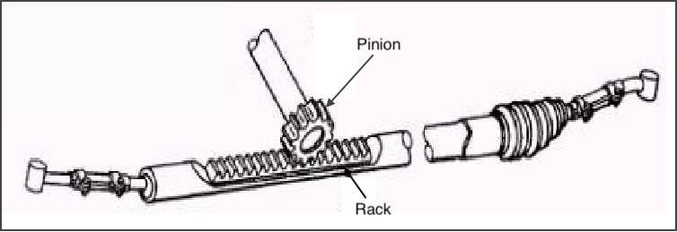
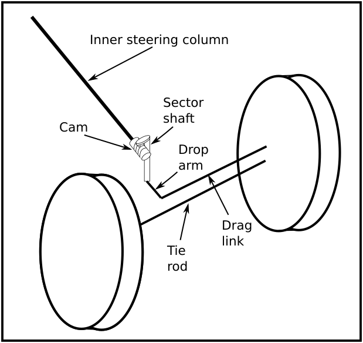
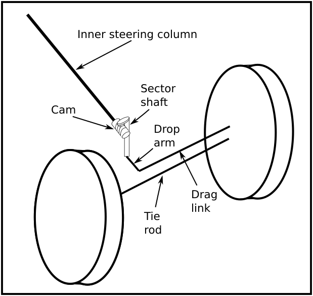
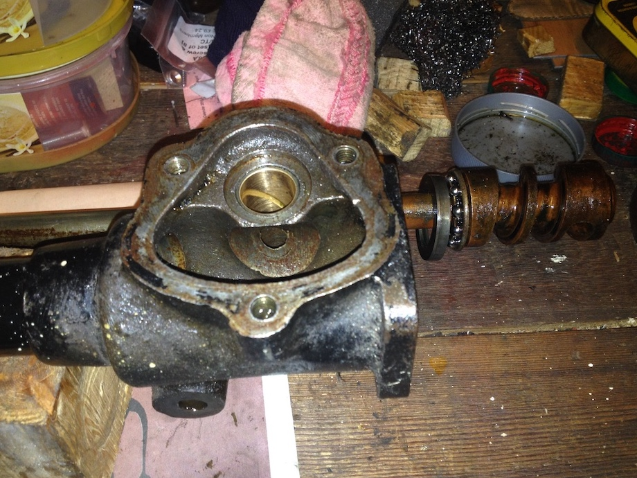
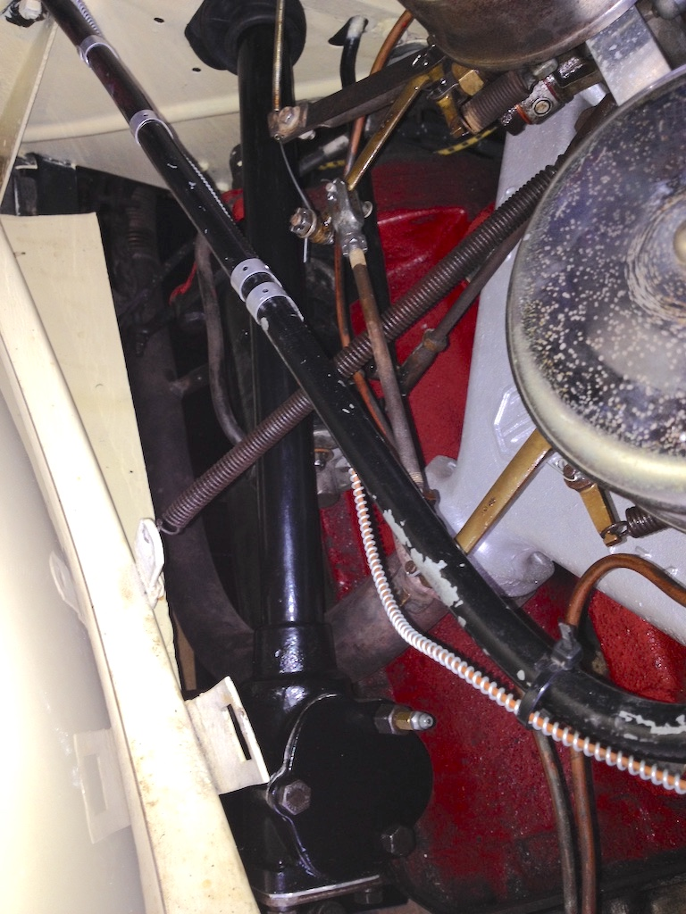

The Joys of a Steering Box
Those who own a TA, TB or TC, or have owned one in the past, probably don’t need to read this article. They will know what I’m talking about. However, owners of MG models more recent than the TC (and indeed any modern car) may be unaware of the ‘delights’ of driving an MG with a steering box rather than one with rack and pinion steering. When you first drive a TC it takes a little while to get used to the front wheels being so far in front of you compared to modern cars. You look over the long bonnet and the backs of the shiny headlights and want to turn too early for fear of not getting around the corner. You knew that the steering would be heavy at slow speeds, but not that heavy. When the front wheels are lifted off the ground the steering turns with the application of one finger on the wheel, but when the car’s weight is on the wheels it’s another matter.
By the time the car is rolling more than a few miles per hour, however, manoeuvrability returns and at speed the car corners positively, gripping well to the road. Going in a straight line, however, is a different matter. With only one and a half turns of the wheel lock-to-lock you don’t need to move the wheel much to get a reaction, even with the wear that can accumulate over 70 years. However, keeping the car moving in a straight line requires constant attention and steering adjustments. The narrow tyres seem to find every imperfection in the road surface and sometimes the car appears to have a mind of its own when it comes to direction of travel.
Most readers will know how the two types of steering design work, but at this point a short comparison might help some. The first figure (‘borrowed’ from autonewpro.blogspot.com) illustrates the simplicity of rack and pinion steering. The pinion (and thus the steering wheel) has a direct connection to the rack and onwards to the front wheels. Provided the unit is in good condition, any movement of the steering wheel results in a movement of the road wheels. The general arrangement with a steering box as fitted to the TC, however, is illustrated in the next diagram. Turning the wheel rotates the cam (with its spiral grove), causing the sector shaft to rotate, the attached drop arm to move the drag link and thus the near-side wheel to move, which, via the tie rod, makes the off-side wheel move. Although each joint provides an opportunity for slack in the system, most of the free movement is usually due to the peg (on the sector shaft) in the groove of the cam. Clearly, as the sector shaft rotates, the peg describes an arc and so is only on the centre line of the cam at two places. Of course, the actual system is more complicated. The final diagram, ‘borrowed’ from the Anglo Parts 5th edition catalogue, shows all the parts associated with the ‘business end’ of the steering column on a TC.
 

Of course much more is involved in obtaining accurate and stable steering than just the steering box. The chassis needs to be square, the front beam axle must be straight and set at the right angle, the king pins and bushes need to be unworn, the toe-in needs to be set correctly, the drag link and tie rod ends need to be unworn, the rubber bushes in the eyes of the springs need to be in good condition and all moving parts need to be well greased. However, the earlier T-Series cars used a Bishop Cam steering box (item 35 in the diagram). Probably its only virtue was its cheapness. The sector shaft (28) rotates directly in the box casting, lubricated only by the carbon in the cast iron and any oil that seeps from the box down the shaft. The diagram shows an oil seal (30) to prevent the quite thick EP140 oil from escaping. TC4985 had oil leaking from the steering box since I bought it and so I set about replacing the seal. To my surprise, there was no seal, not even a rebate for one, but the sector shaft ‘tube’ in the box had been bored out and bronze bushes fitted. The photo of the box shows the top bush and the cam, with the top bearing (37 in the diagram).
The Bishop Cam steering box has an end plate (31) that holds the cam and the inner column in place and a top plate (38) that holds the sector shaft in place. On TC4985 the top plate had been replaced with a Tomkins Kit, placing a roller bearing on top of the sector shaft rather than just the surface of the top plate. However, others warn of this placing too much stress on the sector shaft arm, which can break off! So I decided to reinstate the original top plate. Both the top plate and end plate use shims for adjustment. However, they each have a different purpose. The shims under the end plate allow the plate to pinch the ball bearings at either end of the cam, whereas the shims under the top plate adjust the end float on the sector shaft.
One of our WSMGOC members very kindly bored a rebate in the bottom of the steering box to take the seal. So after cleaning and painting the box and column I was able to refit it, including a draught excluder around the column in the firewall that had been missing. Many find the Bishop Cam steering box just too ‘uncertain’ and so choose to replace it with an alternative that gives more positive steering. There happens to be VW and Nissan boxes that, with slight modifications can be fitted to a TC. However, making a TC behave like a modern car wouldn’t really be in keeping with the rest of the car. So my TC may still ‘wander’ down the road, but now it won’t leave a trail of oil; at least not from the steering box.
(Written 20th January 2019; published in WSMGOC Main Gear, February 2019.)
© David James 2020 Last updated: 2nd May 2020